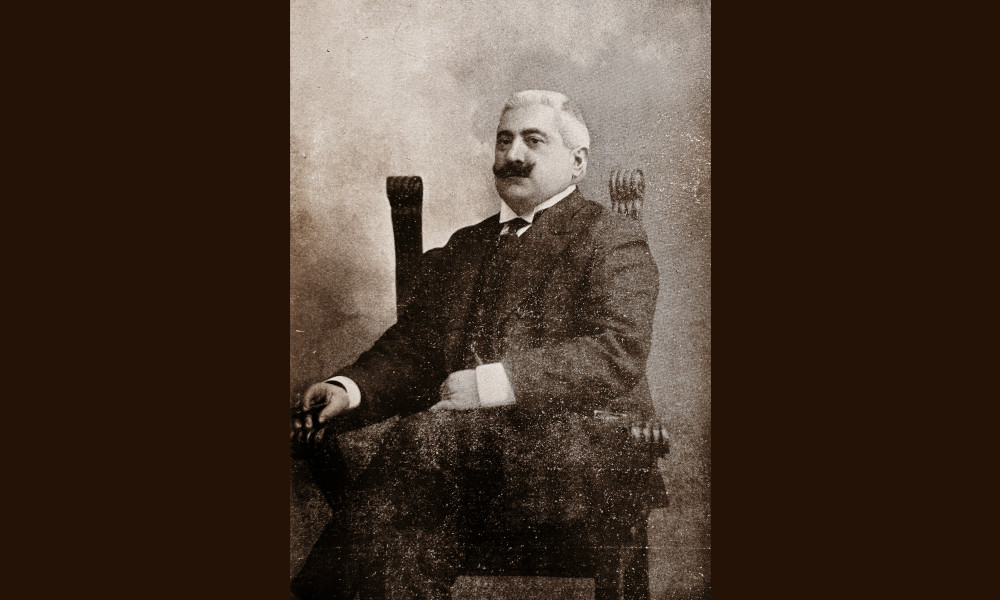

Rambaldi

- Dati biografici
- Albero familiare
- Luoghi
- Relazioni
- Bibliografia
- Opere trattate
Arturo Rambaldi (?-1929) intraprese la carriera di antiquario a Bologna all'inizio del XX secolo grazie al rapporto con Raffaele Angiolini, commerciante che sul finire dell'Ottocento esercitava la professione in via Ugo Bassi 30, e rimase attivo in città fino al terzo decennio. Demetrio Tolosani, sulle pagine della della rivista "L'Antiquario" lo ricorda, descrivendolo come specializzato negli oggetti d'arredamento e nel mobilio che proponeva in vendita anche con pezzi realizzati 'in stile'.
Durante gli anni di attività organizzò almeno sei vendite all'asta di intere o parziali collezioni private, tra cui quella Gozzadini, tenutasi nel 1906 nell'omonimo palazzo bolognese. Suo genero fu Eugène Imbert, attivo a Milano in via Napoleone 38. Rambaldi, ancora secondo la testimonianza di Tolosani, inizialmente lo riforniva con la propria merce.
Bibliografia essenziale:
- Commemorazione di Arturo Rambaldi, In «L'Antiquario», XVI, 3, 1929, p. 177
- Bellini, L., De Chirico, G. (1947), Nel mondo degli antiquari, Firenze, Arnaud
- Tolosani, D. (1913), I colleghi d'Italia: Bolognesi, In «L'Antiquario», VI, 2-3, pp. 9-12
Vedi le opere transitate presso l'antiquario presenti nel catalogo della Fondazione Zeri